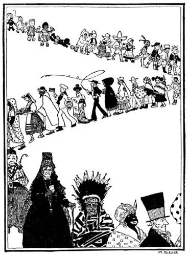

04
The Endless Parade
没有尽头的队列

DID you ever see a parade—a very long one? I once saw a parade of soldiers that took all day to pass by. Tramp, tramp—tramp, tramp—tramp, tramp, hour after hour, all day long. I never had seen so many men in my whole life. There must have been a hundred thousand of them. It didn’t seem possible that there were so many people in the World. But if all the people there are in the World should pass by in one long parade, it would take not one day but a lifetime for them to pass by, for there are over two billion people in the world.
A hundred new people—babies—are born every minute of the day and of the night; many are born while you are reading this, and with every tick of the clock some one has died. But more people are born than die each day, so that the World is getting fuller and fuller of people all the time.
The people on the World are all about the same size and shape. Only in fairy-tales are people as small as your thumb or as tall as a church-steeple. None have wings instead of arms or wheels instead of legs. They all have one head, one nose, one mouth; they all have two ears, two eyes, two arms, and two legs. And yet in all these two billion people there are no two alike, there is not a single person exactly like any other one. Even twins are not exactly alike.
The chief difference in people is their color. Most of the two billion are white, but a great many are black and a larger number are halfway between white and black—they are sort of yellow-brown. These three colors of people we call “races.” “It’s a good day for the race,” my father used to say. I thought he was talking of a horse-race or a boat-race, but when I asked, “What race?” he would smile and say, “It’s a good day for the white race, the black race, all the races.”
Each race used to live by itself in its own part of the World, but many have wandered away to other parts. Most of the people in our part of the World are white, but there are also many black and a few yellow-brown.
Suppose you had been born black.
Suppose you’d been born yellow or red.
Suppose you had been born in
Africa or
Asia or
Australia.
Suppose you had been born with another
father and mother.

The endless parade of all the people on the World
世界上全人类的没有尽头的队伍
Suppose you had been born in another world
instead of this World.
Suppose you hadn’t been born at all—where
would you be now?
There are only six continents where people live, but on each of these there are several countries. A country doesn’t mean the country. A country means cities, towns, villages and country under one ruler. There are eighty countries on the World. Some countries are small with only a few thousand people in the whole country, and some countries are large with many millions of people. Our country, the United States, has over one hundred and fifty million people, but there are several countries with more. China, which is on the other side of the World, has the most people. It has three times as many people as the United States; and India, another country on the other side of the World, has the next largest number of people. Both these countries are in Asia—the largest continent with the shortest name and the most people.
Each country has a ruler, just as every family has a father or every football team has a captain. Some countries have a king for a ruler and some have a president, and most countries have other people to rule with the king and the president.
A king is a king because his father was a king, and his son will be king for the same reason. A president is president because he was chosen by the people in the country, just as the captain of a football team is chosen by his team. Choosing we call “voting.” A king is king for his whole life, but a president is president for only a few years.
The country of a king is called a kingdom. If one man rules over several countries, he is called an emperor and the countries an empire. A country with a president is called a republic. Our country is a republic. The king or the president and the others who rule with him are called the government. The government makes the rules, but it also does two things that no one else is allowed to do. The government makes the money of the country and the postage-stamps. The money of one country is not good in another country and neither are the postage-stamps. And neither is the language of one country good in another—usually.
The people on the World speak many different languages. Even in the same country many different languages are spoken. There are over 3,000 different languages in all—3,000, just think of that! You probably speak only one of these, and couldn’t talk to any one nor understand any one who spoke any other language than your own. In the United States almost every one speaks English, which, strange to say, is the language of another country—England. But on a continent like Europe you could hardly go a day’s journey without hearing a different language on the street, in the shops, at the hotel.
I happened to be born in the United States, and as I heard everybody around me speaking English I learned to speak English too. But I might have been born in Asia, a yellow boy, and learned to speak Chinese, or I might have been born in Africa, a black boy, and learned to speak a language I don’t even know the name of. I know a man who speaks a dozen different languages, and I know of a man who speaks 100! You can understand how wonderful this is when it usually takes years to learn to speak one other language besides your own. Letters of most of these languages are like ours, like the letters on this page—they are called Roman, because a people called Romans first used them long ago. But letters of Chinese and Japanese and some other far-away languages are different—they look like this:
【中文阅读】
你看过阅兵队伍吗？非常长的那种？我曾经看过一次阅兵队伍，队伍走了一整天才走完。噔噔，噔噔——噔噔，噔噔——噔噔，噔噔，一个钟头又一个钟头，走了整整一天。我一生中从没见过这么多人，肯定有十万人那么多。世界上居然有那么多的人，这似乎不可能。但是如果让世界上所有的人都排起来进行一次大阅兵，那么不是走一天，而是要走一辈子的时间才能走完，因为整个世界上 一共有20多亿人。 [1]
每天每夜的每分钟，都有100个新人——新生婴儿——来到这个世界；就在你读这本书的时候，许多孩子又出生了；在时钟的每一次滴答声中又有人死去。但是每天出生的人比死去的人更多，所以世界上的人越来越多。
世界上的人基本上个头和体形都差不多。只有在童话故事中才有像拇指般大的小人儿或是像教堂的尖塔那么高的巨人。没有哪个人上身不长手臂而长着翅膀，也没有哪个人下身不长腿而长着轮子。他们都有一个头、一只鼻子、一张嘴；他们都有两只耳朵、两只眼睛、两个手臂、两条腿。然而在世界的全部人口中，没有两个人长得是一样的，没有哪一个人长的和别人一模一样。即使是双胞胎也不是完全一样的。
人与人之间的最主要区别是肤色的不同。全世界人中大多数是白色的，也有大量的人是黑色的，还有更多的人是介于白色和黑色之间的——近似黄褐色。我们把这三种肤色的人叫做“种族”。“这是全民族的好日子。”我爸爸经常这么说。我认为他是在说赛马比赛或是划船比赛，但是当我问他“什么比赛”的时候，他会笑着说：“是白色人种、黑色人种、所有种族的好日子。” [2]
每个种族原来都是住在世界上他们自己那块地方，但是很多种族游荡到了其他地方。在世界上我们这块地方人大都是白种人，但是也有很多黑种人和一些黄褐种人。
假如你生来就是一个黑种人。
假如你生来就是一个黄种人或者红种人。
假如你生在
非洲
或者是亚洲
或者是澳洲。
假如你是别的爸爸妈妈所生。
假如你生在另一个世界而不是这个世界上。
假如你根本没有出生——你现在会是在哪儿呢？
世界上有人居住的大陆只有六个，但是每一个大陆上都有好多个国家。“国家”并不意味着“乡村”。一个国家意味着处于一个统治者之下的城市、乡镇、 村庄和乡村。世界上一共有80个国家。 [3] 有的国家很小，全国总共只有几千人。有的国家很大，全国会有几百万的人。我们的国家，美国，有一亿五千万人，但是还有几个国家的人数更多。在世界另一面的中国拥有最多的人口，是美国的三倍。世界另一面的另一个国家——印度——拥有第二多的人口。这两个国家都位于亚洲——最大的大陆，它的名字最短，人口最多。
每个国家都有一个统治者，就像每个家庭都有一个爸爸，或者像每个足球队都有一个队长。有的国家的统治者是国王，有的是总统，大多数国家都由其他的人和国王或总统共同来统治国家。
一个国王能当国王是因为他的爸爸是国王，因为同样的原因他的儿子也会成为国王。一个总统能当总统因为他是由他的国家的人民选出来的，就像足球队的队长是由队员推选出来的一样。这种推选叫做“选举”。一个国王一辈子都是国王，而一个总统只能当几年的总统。
一个国王的国家叫做王国。如果一个人统治好几个国家，他就叫做帝王，这些国家就叫做帝国。一个总统领导的国家叫做共和国。美国就是一个共和国。国王或者总统以及和他一起统治国家的人叫做政府。政府制定规章制度，政府还做两件别人不能做的事情。政府制造国家的货币和邮票。一个国家的货币在另一国家并不能通用，邮票也是一样。同样的，一个国家的语言在另一国家里通常也不能通用。
世界上的人说很多种不同的语言。即使在同一个国家里也有许多不同的语言。世界上总共有三千多种不同的语言，想想吧，三千多种！你也许只会说其中一种语言，不会说，也听不懂其他语言。在美国，几乎每个人都说英语；说起来有点奇怪，这也是另外一个国家——英国的语言。但在欧洲大陆上，上街走一天，在商店里、旅馆里，你总是能听到不同的语言。
我碰巧出生在美国，由于听到周围的人都说英语，我也就学会了说英语。但是我也有可能出生在亚洲，是个黄色人种的小男孩，学会说汉语；我还有可能出生在非洲，是个黑色人种的小男孩，于是学会说一种我也叫不上名字的语言。我认识一个人，他会说12种不同的语言，我还听说过一个人，他会说100种语言！通常要学会另一种和你的母语不同的语言要花上几年的时间，所以你可以想象到他们有多了不起。大多数语言的字母和我们的差不多，就像这本书上的字母一样，这种字母叫做罗马字，因为是由叫罗马人的一个民族在很久以前最先使用的。但是汉语和日语以及其他更远地方的语言有着不一样的字母。